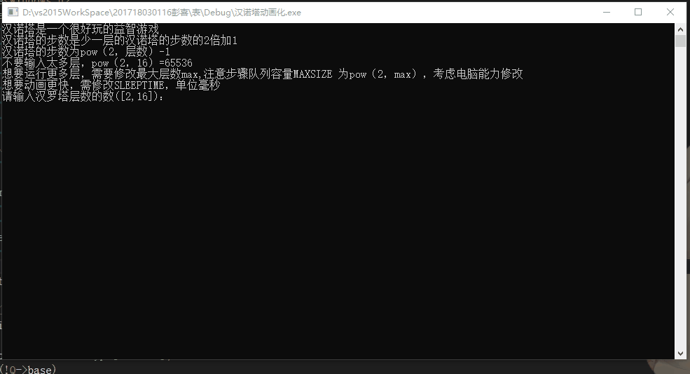

#include<stdio.h>
#include<stdlib.h>
#include<math.h>
#include<Windows.h>
#include<conio.h>//非标准库，此处应该不需要
#define OK 1 //通过
#define ERROR 0 //错误
#define OVERFLOW -2 //堆栈溢出
#define max 16 //汉诺塔层数
#define MAXSIZE (int)pow(2,max) //可存放步骤数 大于pow（2，max）-1
#define SLEEPTIME 0 * 1000// 动画过度时间
typedef int Status; //函数类型,其值为状态码
typedef char ElemType; //抽象数据类型
//循环队列
typedef struct
{
ElemType* base;
int front;
int rear;
}SqQueue;
typedef enum
{
f, t
}Bool;
//初始化
Status initQueue(SqQueue* Q)
{
Q->base = new ElemType[MAXSIZE];
if (!Q->base)
{
return OVERFLOW;
}
Q->front = Q->rear = 0;
return OK;
}
//判空
Bool isEmpty(SqQueue* Q)
{
return Q->front == Q->rear ? t : f;
}
//长度
int getLength(SqQueue* Q)
{
return (Q->rear - Q->front + MAXSIZE) % MAXSIZE;
}
//是否满
Bool isFull(SqQueue* Q)
{
return (Q->rear + 1) % MAXSIZE == Q->front ? t : f;
}
//入队
Status enQueue(SqQueue* Q, ElemType e)
{
if (isFull(Q))
{
return ERROR;
}
Q->base[Q->rear] = e;
Q->rear = (Q->rear + 1) % MAXSIZE;
return OK;
}
//出队
ElemType deQueue(SqQueue* Q)
{
if (isEmpty(Q))return ERROR;
ElemType e = Q->base[Q->front];
Q->front = (Q->front + 1) % MAXSIZE;
return e;
}
//取队头
ElemType getHead(SqQueue* Q)
{
if (!isEmpty(Q))return Q->base[Q->front];
return NULL;
}
SqQueue* Q1 = new SqQueue;//存放步骤前面 A->C 存A
SqQueue* Q2 = new SqQueue;//存放步骤后面 A->C 存C
int arrA[max] = { 0 };//柱子A
int arrB[max] = { 0 };//柱子B
int arrC[max] = { 0 };//柱子C
//打印部分消息
void pmasage()
{
printf("汉诺塔是一个很好玩的益智游戏\n");
printf("汉诺塔的步数是少一层的汉诺塔的步数的2倍加1\n"
"汉诺塔的步数为pow（2，层数）-1\n"
"不要输入太多层，pow（2，%d）=%d\n"
"想要运行更多层，需要修改最大层数max,注意步骤队列容量MAXSIZE 为pow（2，max），考虑电脑能力修改\n"
"想要动画更快，需修改SLEEPTIME，单位毫秒\n", max, (int)pow(2, max));
}
//汉诺塔
void hanoi(int n, char A, char B, char C)
{
if (n == 1)
{
//printf("%c -> %c %d\n", A, C,n);
enQueue(Q1, A); enQueue(Q2, C);
}
else
{
hanoi(n - 1, A, C, B);
//printf("%c -> %c %d\n", A, C,n);
enQueue(Q1, A); enQueue(Q2, C);
hanoi(n - 1, B, A, C);
}
}
//画一排 多排组成图像
void gprint(int n, int arr)
{//所有空格的个数经过数学推理
printf(" ");//使图形不靠边
if (0==arr)//柱子上没盘子
{//柱子左边
for (int i = 1; i <= n; i++)
{//空格大小好像和#号不一样大，多画了一个空格
printf(" ");
}
printf("|");//柱子
//柱子右边
for (int i = 1; i <= n+ 1; i++)
{//同上
printf(" ");
}
}
else//柱子上有盘子
{
for (int i = 1; i <=n- ceil(arr/2); i++)
{
printf(" ");
}
for (int i = 1; i <= arr; i++)
{
printf("#");
}
for (int i = 1; i <= n - ceil(arr / 2)+1; i++)
{
printf(" ");
}
}
}
//从0开始寻找数组中非零位的索引
int getNoZeroIndex(int arr[])
{
int i = 0;
while (0 == arr[i])
{
if (max-1 == i)return max;//全为零（空柱子）防止索引越界
i++;
}
return i;
}
//盘子移动
void gmove(char Q1c, char Q2c)
{
switch (Q1c)
{
case 'A':
switch (Q2c)
{
case 'B':
arrB[getNoZeroIndex(arrB) - 1/*这就是为什么会返回max的原因*/] = arrA[getNoZeroIndex(arrA)];
arrA[getNoZeroIndex(arrA)] = 0;
break;
case 'C':
arrC[getNoZeroIndex(arrC) - 1] = arrA[getNoZeroIndex(arrA)];
arrA[getNoZeroIndex(arrA)] = 0;
break;
}
break;
case 'B':
switch (Q2c)
{
case 'A':
arrA[getNoZeroIndex(arrA) - 1] = arrB[getNoZeroIndex(arrB)];
arrB[getNoZeroIndex(arrB)] = 0;
break;
case 'C':
arrC[getNoZeroIndex(arrC) - 1] = arrB[getNoZeroIndex(arrB)];
arrB[getNoZeroIndex(arrB)] = 0;
break;
}
break;
case 'C':
switch (Q2c)
{
case 'A':
arrA[getNoZeroIndex(arrA) - 1] = arrC[getNoZeroIndex(arrC)];
arrC[getNoZeroIndex(arrC)] = 0;
break;
case 'B':
arrB[getNoZeroIndex(arrB) - 1] = arrC[getNoZeroIndex(arrC)];
arrC[getNoZeroIndex(arrC)] = 0;
break;
}
break;
}
}
//移动控制台光标
void gotoxy(int x, int y) {
COORD pos = { x,y };
HANDLE hOut = GetStdHandle(STD_OUTPUT_HANDLE);// 获取标准输出设备句柄
SetConsoleCursorPosition(hOut, pos);//两个参数分别是指定哪个窗体，具体位置
}
//输出图形方式一
void gmovie1( int n)
{
gotoxy(0, 10);//测试得出10应为第10行 保留前面的pmasage（）
for (int i = 0; i < max; i++)//先画一次图形
{//从柱子最顶端开始画
gprint(n, arrA[i]);
gprint(n, arrB[i]);
gprint(n, arrC[i]);
printf("\n");
}
for (int i = 1; i < 2 * (n + 2/*本来算出不需加2的，但大小不一样*/) * 3; i++)
{//底座
printf("-");
}
printf("\n");
while ((!isEmpty(Q1))&&(!isEmpty(Q2)))
{//开始画所有图形
Sleep(SLEEPTIME);//间隔时间
//system("cls");//使用会很闪，所以使用gotoxy（）
gotoxy(0, 10);//移动光标
//pmasage();//如果使用system，则也需同时使用
gmove(deQueue(Q1), deQueue(Q2));//移动盘子
for (int i = 0; i < max; i++)
{
gprint(n, arrA[i]);
gprint(n, arrB[i]);
gprint(n, arrC[i]);
printf("\n");
}
for (int i = 1; i < 2 * (n + 2) * 3; i++)
{
printf("-");
}
printf("\n");
}
}
void gmovie2(int n)
{
for (int i = 0; i < max; i++)
{
gprint(n, arrA[i]);
gprint(n, arrB[i]);
gprint(n, arrC[i]);
printf("\n");
}
for (int i = 1; i < 2 * (n + 2) * 3; i++)
{
printf("-");
}
printf("\n");
while ((!isEmpty(Q1)) && (!isEmpty(Q2)))
{
//Sleep(0.6 * 1000);
gmove(deQueue(Q1), deQueue(Q2));
for (int i = 0; i < max; i++)
{
gprint(n, arrA[i]);
gprint(n, arrB[i]);
gprint(n, arrC[i]);
printf("\n");
}
for (int i = 1; i < 2 * (n + 2) * 3; i++)
{
printf("-");
}
printf("\n");
}
}
int main(void)
{
initQueue(Q1);//初始队列
initQueue(Q2);
int n = 0;
pmasage();//打印信息
while (!(n > 1&&n<=max))
{
printf("请输入汉罗塔层数的数([2,%d])： ",max);
scanf_s("%d", &n);
}
printf("步骤生成中……\n");
hanoi(n, 'A', 'B', 'C');
printf("步骤生成成功\n");
for (int i = max-1; i>= max -n; i--)
{//初始化柱子上的盘子
arrA[i] = 2 * (i - (max-1 - n)) - 1;
}
gmovie1(n);
system("pause");
}
调用方式
1.1wmv文件 点击下载
1.2.gif

2
3.思考过程